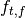
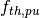
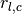

Fast/Thermal Reactor Request-Based Exchange¶
The primary criticism agaisnt a random assignment of commodities, preference coefficients, and constraint coefficients is that using domain-specific models provides specific structure to a given formulation. This problem species is designed to target a specific set of cases that focus randomness in the domain-related values and defines domain-specific translations from those values to the associated coefficients.
Model Fidelity¶
Furthermore, this species is specifically targeted at investigating the effects of model fidelity on a given formulation. Eight different fidelity “levels” have been defined in three categories.
| Category | Subcategory |
|---|---|
| Facilities |
|
| Fuel Cycle |
|
| Geospatial |
|
Commodities¶
There are four possible commodities based on the fuel cycle fidelity modeled:
- enriched UOX
- fast MOX
- thermal MOX
- fast ThOX
Facilities¶
In order to allow for rapid instance generation, surrogate models of facilties must be used. Surrogate models simplify the decision making that would normally occur in agent archetypes. The goal of using surrogate models is provide instances generally domain-valid structure.
Material¶
All surrogate facility models require a notion of materials. Because simplicity is required, materials have two properties: a commodity and fertile enrichment. Certain commodities are fungible, e.g., fast and thermal plutonium. Fungible commodities are delineated by preference assignment and supplier process coefficients, both of which described in the following sections.
Reactors¶
request enrichment and commod_{i, j}
enr per request
recycled fraction for thermal reactors
Supporting Facilities¶
conversion functions, rhs equation
Fuel Cycles¶
More commodities are required to model more complex fuel cycles. Similarly, as more fungible commodities are added a given instance of the GFCTP becomes more complex. This species of the GFCTP can add fuel cycle, and therefore commodity, complexity in three steps.
Once Through¶
The least complex fuel cycle is the Once Through (OT) fuel cycle. Reactors request enriched uranium, and supporting facilities are represented by Enrichment Fuel Fabricators.
Parameters¶
None
Recycle¶
Next, a Recycle (R) scenario is considered. Thermal and fast reactors are included, and a ratio between the two is set as a parameter. Supporting facilities include Enrichment, Thermal, and Fast Fuel Fabricators. The amount of thermal reactors requests that can be satisfied by recycled fuel is set as a parameter.
Parameters¶
 : the fraction of thermal reactors to fast reactors
: the fraction of thermal reactor requests that can be met with recycled fuel
Questions¶
- Should suppliers be treated similarly to reactors (i.e., )?
This increases the parameter space by
 dimensions.
dimensions.
Recycle + Thorium¶
Finally, a fuel cycle with a thorium breeder reactor is modeled. Building on the R scenario, the Recycle + Thorium (RTh) adds an additional fast reactor model that prefers Thorium-based recycled fuel. The fraction of fast reactors that are Thorium-based is set as a parameter. Additionally, a Thorium Fast Fuel Fabricator is added to the pool of suppliers.
Parameters¶
 : the fraction of fast reactors that are Thorium-based
Geospatial Assignment¶
Geospatial values can be assigned in either a coarse or fine fashion. In both
cases, a location proxy is assigned uniformly, e.g., on ![[0,
1]](../_images/math/4aa068473bb8b505e6fb77dd71042441a1f265ba.png) . Locations are binned, representing regions. If coarse, only regional
relationships are taken into account; if fine, regional relationships are taken
into account as well as total proximity.
. Locations are binned, representing regions. If coarse, only regional
relationships are taken into account; if fine, regional relationships are taken
into account as well as total proximity.
Once geospatial values are assigned, they can then affect preferences. A surrogate model function is required, and one suggestion is
Parameters¶
: whether to include a location preference
: whether to include a fine location proxy
: the number of regions
Surrogate Models¶
: location-based preference
Preference Determination¶
Given that facilities have preference assignments based on commodity matching and, optionally, a valid question is whether the formulation is affected by their relative magnitude. Therefore a final parameter is added to determine the total preference
Parameters¶
 : the importance ratio of location to commodity types